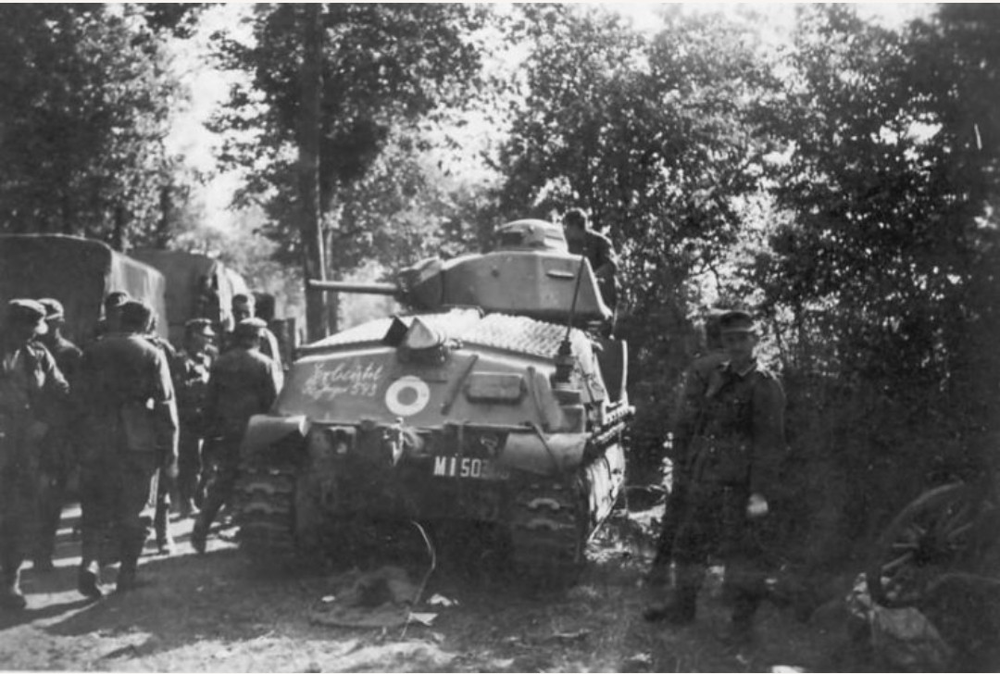
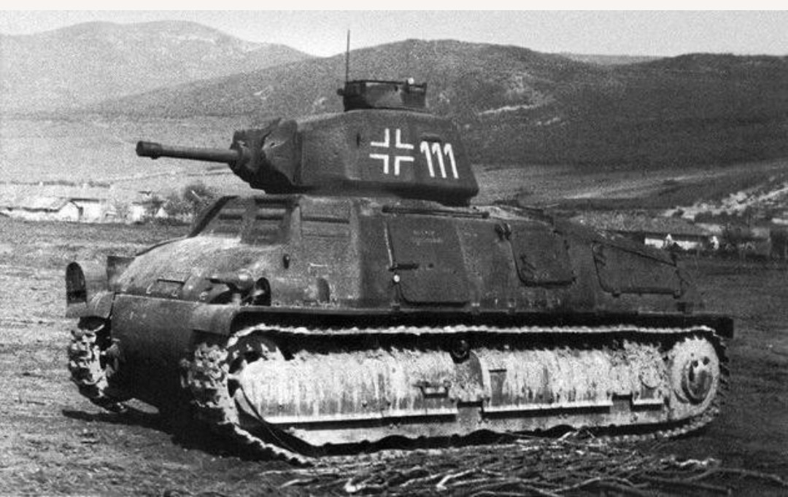
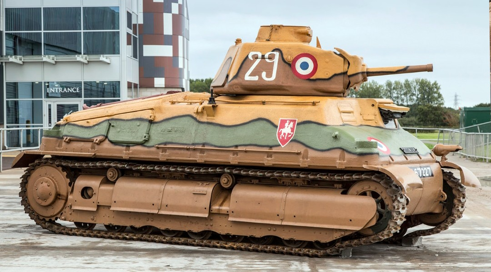

Cette fiche présente un char de cavalerie français de l’entre‑deux‑guerres, conçu pour la manœuvre rapide et l’exploitation. Les informations ci‑dessous sont exposées dans un cadre strictement historique et documentaire, conformément aux exigences muséales de neutralité et de contextualisation.
Le SOMUA S35 est l’un des blindés les plus avancés de la doctrine française de 1935–1940 : coque moulée, blindage solide, mobilité correcte et canon de 47 mm SA 35 particulièrement performant. Il constitue l’ossature des Divisions Légères Mécaniques (DLM), unités de cavalerie mécanisée destinées à la reconnaissance offensive et aux combats de rencontre.
Le SOMUA S35 est l’un des blindés les plus avancés de la campagne de France. Conçu pour la cavalerie, il combine un blindage moulé moderne, une bonne mobilité et un canon de 47 mm SA 35 capable de détruire les Panzer allemands du début de la guerre. Sa silhouette arrondie et son camouflage tricolore en font un char emblématique de 1940.

Le S35 possède une coque moulée, rare en 1940, offrant une protection supérieure aux chars allemands. Son canon de 47 mm est l’un des plus efficaces de la campagne, capable de perforer les blindages adverses à longue distance.

Après l’armistice de juin 1940, l’armée allemande récupère plus de 300 SOMUA S35 encore en état. Repeints, renumérotés et modifiés, ils sont intégrés sous la désignation Panzerkampfwagen 35S 739(f). On les retrouve en France occupée, dans des unités de sécurité, et parfois sur le front de l’Est.

Plusieurs SOMUA S35 sont aujourd’hui restaurés et exposés dans des musées militaires. Leur camouflage tricolore, leurs insignes de cavalerie et leur silhouette arrondie permettent de comprendre l’avance technologique française au début de la guerre.
Après la défaite française de 1940, l’armée allemande récupère de nombreux SOMUA S35 encore opérationnels. Ces chars sont repeints, modifiés et intégrés dans leurs unités sous le nom Panzerkampfwagen 35S 739(f). C’est pour cette raison que certaines photos montrent des S35 portant des croix allemandes : ce sont des blindés français réutilisés par l’occupant.